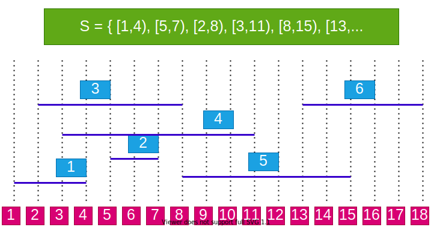
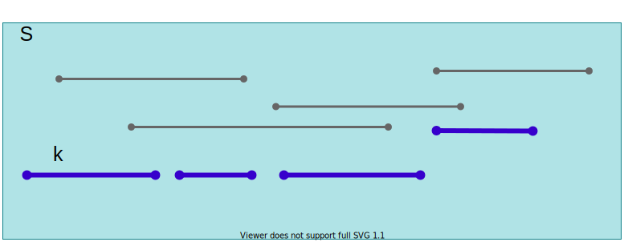

Download DOC, SLIDE, PPTX
We have:
Objective: Choose the max number of compatible activities
Note: Objective is to maximize the number of activities, not the total time of activities.
Example:


Recursive formulation: Choose the first activity kkk, and then solve the remaining subproblem Sk′S_k'Sk′
How to choose the first activity kkk?
DP would work,
Assume (without loss of generality) f1≤f2≤⋯≤fnf_1 \leq f_2 \leq \dots \leq f_nf1≤f2≤⋯≤fn
Greedy choice property: a sequence of locally optimal (greedy) choices ⇒\Rightarrow⇒ an optimal solution
How to choose the first activity greedily without losing optimality?
Let activity set S={a1,a2,…an}S = \{a_1, a_2, \dots a_n\}S={a1,a2,…an}, where f1≤f2≤⋯≤fnf_1 \leq f_2 \leq \dots \leq f_nf1≤f2≤⋯≤fn
Theorem: There exists an optimal solution A⊆SA \subseteq SA⊆S such that a1∈Aa_1 \in Aa1∈A
In other words, the activity with the earliest finish time is guaranteed to be in an optimal solution.
Proof: Consider an arbitrary optimal solution B={ak,aℓ,am,… }B = \{a_k, a_{\ell}, a_m, \dots\}B={ak,aℓ,am,…}, where fk<fℓ<fm<…f_k < f_{\ell} < f_m < \dotsfk<fℓ<fm<…
explained in the next slide..
Basic idea of the greedy algorithm:
Remember arbitary optimal solution explaination from previous sections (finish time order is important for a1a_1a1 selection with star time and overlapping checking)
jjj: specifies the index of most recent activity added to AAA
fj=Max{fk:k∈A}f_j = Max\{f_k : k \in A\}fj=Max{fk:k∈A}, max finish time of any activity in AAA;
Thus, si≥fjs_i \geq f_jsi≥fj checks the compatibility of iii to current AAA
Running time: Θ(n)\Theta(n)Θ(n) assuming that the activities were already sorted.
GAS(s,f,n) {A←{1}j←1for i←2 to n doif si≥fj thenA←A∪{i}j←iendifendfor}\begin{align*} & \text{GAS}(s, f, n) \ \{ \\ & \quad A \leftarrow \{1\} \\ & \quad j \leftarrow 1 \\ & \quad \text{for} \ i \leftarrow 2 \ \text{to} \ n \ \text{do} \\ & \qquad \text{if} \ s_i \geq f_j \ \text{then} \\ & \qquad \quad A \leftarrow A \cup \{i\} \\ & \qquad \quad j \leftarrow i \\ & \qquad \text{endif} \\ & \quad \text{endfor} \\ & \quad \} \end{align*} GAS(s,f,n) {A←{1}j←1for i←2 to n doif si≥fj thenA←A∪{i}j←iendifendfor}
mij=MINi≤k<j{mik+mk+1,j+pi−1pkpj}m_{ij}=\underset{i \leq k < j}{MIN} \{ m_{ik} + m_{k+1,j} + p_{i-1} p_k p_j \} mij=i≤k<jMIN{mik+mk+1,j+pi−1pkpj}
We don’t know ahead of time which kkk value to choose.
We first need to compute the results of subproblems mikm_{ik}mik and mk+1,jm_{k+1,j}mk+1,j before computing mijm_{ij}mij
The selection of kkk is done based on the results of the subproblems.
How can you judge whether
A greedy algorithm will solve a particular optimization problem?
Two key ingredients
A problem exhibits optimal substructure if an optimal solution to the problem contains within it optimal solutions to subproblems
Example: Activity selection problem SSS
A′=A−{a1}A' = A - \{a_1\} A′=A−{a1}
S′={ai∈S:si≥f1}S' = \{ a_i \in S : s_i \geq f_1 \} S′={ai∈S:si≥f1}
Knapsack Problems(S, w)
Each item iii has:
A thief has a knapsack of weight capacity www
Which items to choose to maximize the value of the items in the knapsack?
The 0-1 knapsack problem:
The fractional knapsack problem:
Lj′=L–{Ij}Sj′=S–{Ij}Wj′=W–wj\begin{align*} & L_{j}' = L – \{I_j\} \\ & S_{j}' = S – \{I_j\} \\ & W_{j}' = W – w_j \end{align*} Lj′=L–{Ij}Sj′=S–{Ij}Wj′=W–wj
Lj′=L–{Ij}Sj′=S–{Ij}Wj′=W–wj\begin{align*} & L_j' = L – \{I_j\} \\ & S_j' = S – \{I_j\} \\ & W_j' = W – w_j \end{align*} Lj′=L–{Ij}Sj′=S–{Ij}Wj′=W–wj
Optimal substructure: Lj′L_j'Lj′ must be an optimal solution for (Sj′,Wj′)(S_j', W_j')(Sj′,Wj′)
Proof: By contradiction, assume there is a solution Bj′B_j'Bj′ for (Sj′,Wj′)(S_j', W_j')(Sj′,Wj′), which is better than Lj′L_j'Lj′.
Q.E.D.Q.E.D.Q.E.D.
Consider an optimal solution L for (S, W)
If we remove a weight 0<w≤wj0 < w \leq w_j0<w≤wj of item jjj from optimal load LLL and let:
Lj′=L−{w pounds of Ij}L_j' = L - \{ w \ \text{pounds of} \ I_j \} Lj′=L−{w pounds of Ij}
Wj′=W−wW_j' = W - w Wj′=W−w
Sj′=S−{Ij}∪{wj−w pounds of Ij}S_j' = S - \{I_j\} \cup \{ w_j - w \ \text{pounds of} \ I_j \} Sj′=S−{Ij}∪{wj−w pounds of Ij}
That is, Lj´ should be an optimal soln to the
Fractional Knapsack Problem(Sj′,Wj′)\text{Fractional Knapsack Problem}(S_j', W_j') Fractional Knapsack Problem(Sj′,Wj′)
Two different problems:
The problems are similar.
Which algorithm to solve each problem?
Can we use a greedy algorithm?
Greedy choice: Take as much as possible from the item with the largest value per pound vi/wiv_i/w_ivi/wi
Does the greedy choice property hold?
Thus, by sorting the items by value per pound the greedy algorithm runs in O(nlgn)O(nlgn)O(nlgn) time
Notation: Kn,WK_{n,W}Kn,W:
Consider an optimal load LLL for problem Kn,WK_{n,W}Kn,W
Let’s consider two cases:
c[i,w]={0 if i=0, or w=0c[i−1,w], if wi>wmax{vi+c[i−1,w−wi],c[i−1,w]otherwisec[i,w] = \begin{cases} 0 & \text{ if } i = 0, \ \text{or} \ w = 0 \\ c[i-1,w], & \text{ if } w_i > w \\ max\{v_i + c[i-1,w-w_i],c[i-1,w] & otherwise \\ \end{cases} c[i,w]=⎩⎨⎧0c[i−1,w],max{vi+c[i−1,w−wi],c[i−1,w] if i=0, or w=0 if wi>wotherwise
for i←1 to n dofor w←1 to W do…c[i,w]←……\begin{align*} & \quad \text{for} \ i \leftarrow 1 \ \text{to} \ n \ \text{do} \\ & \qquad \text{for} \ w \leftarrow 1 \ \text{to} \ W \ \text{do} \\ & \qquad \quad \dots \\ & \qquad \quad c[i,w] \leftarrow \dots \\ & \qquad \quad \dots \\ \end{align*} for i←1 to n dofor w←1 to W do…c[i,w]←……
ccc is an (n+1)×(W+1)(n + 1)\times(W+1)(n+1)×(W+1) array; c[0…n:0…W]c[0 \dots n : 0 \dots W]c[0…n:0…W]
Note : table is computed in row-major order
Run time: T(n)=Θ(nW)T(n) = \Theta(nW)T(n)=Θ(nW)
KNAP0-1(v,w,n,W)for ω←0 to W doc[0,ω]←0for i←0 to m doc[i,0]←0for i←0 to m dofor ω←1 to W doif wi≤ω thenc[i,ω]←max{vi+c[i−1,ω−wi],c[i−1,ω]}elsec[i,ω]←c[i−1,ω]return c[m,W]\begin{align*} & \text{KNAP0-1}(v, w, n,W) \\ & \quad \text{for} \ \omega \leftarrow 0 \ \text{to} \ W \ \text{do} \\ & \qquad c[0, \omega] \leftarrow 0 \\ & \quad \text{for} \ i \leftarrow 0 \ \text{to} \ m \ \text{do} \\ & \qquad c[i, 0] \leftarrow 0 \\ & \quad \text{for} \ i \leftarrow 0 \ \text{to} \ m \ \text{do} \\ & \qquad \quad \text{for} \ \omega \leftarrow 1 \ \text{to} \ W \ \text{do} \\ & \qquad \qquad \text{if} \ w_i \leq \omega \ \text{then} \\ & \qquad \qquad \quad c[i, \omega] \leftarrow max\{v_i + c[i-1, \omega - w_i] , c[i -1, \omega]\} \\ & \qquad \qquad \text{else} \\ & \qquad \qquad \quad c[i, \omega] \leftarrow c[i-1, \omega] \\ & \quad return \ c[m,W] \end{align*} KNAP0-1(v,w,n,W)for ω←0 to W doc[0,ω]←0for i←0 to m doc[i,0]←0for i←0 to m dofor ω←1 to W doif wi≤ω thenc[i,ω]←max{vi+c[i−1,ω−wi],c[i−1,ω]}elsec[i,ω]←c[i−1,ω]return c[m,W]
SOLKNAP0-1(a,v,w,n,W,c)i←n;ω←WS←∅while i←0 doif c[i,ω]=c[i−1,ω] theni←i−1elseS←S∪{ai}ω←ω−wii←i−1return S\begin{align*} & \text{SOLKNAP0-1}(a, v, w, n,W,c) \\ & \quad i \leftarrow n ; \omega \leftarrow W \\ & \quad S \leftarrow \emptyset \\ & \quad while \ i \leftarrow 0 \ do \\ & \qquad if \ c[i, \omega] = c[i-1, \omega] \ then \\ & \qquad \quad i \leftarrow i - 1 \\ & \qquad else \\ & \qquad \quad S \leftarrow S \cup \{a_i\} \\ & \qquad \quad \omega \leftarrow \omega - w_i \\ & \qquad \quad i \leftarrow i - 1 \\ & \quad return \ S \end{align*} SOLKNAP0-1(a,v,w,n,W,c)i←n;ω←WS←∅while i←0 doif c[i,ω]=c[i−1,ω] theni←i−1elseS←S∪{ai}ω←ω−wii←i−1return S
Introduction to Algorithms, Third Edition | The MIT Press
Bilkent CS473 Course Notes (new)
Bilkent CS473 Course Notes (old)
−End−Of−Week−7−Course−Module−-End-Of-Week-7-Course-Module-−End−Of−Week−7−Course−Module−